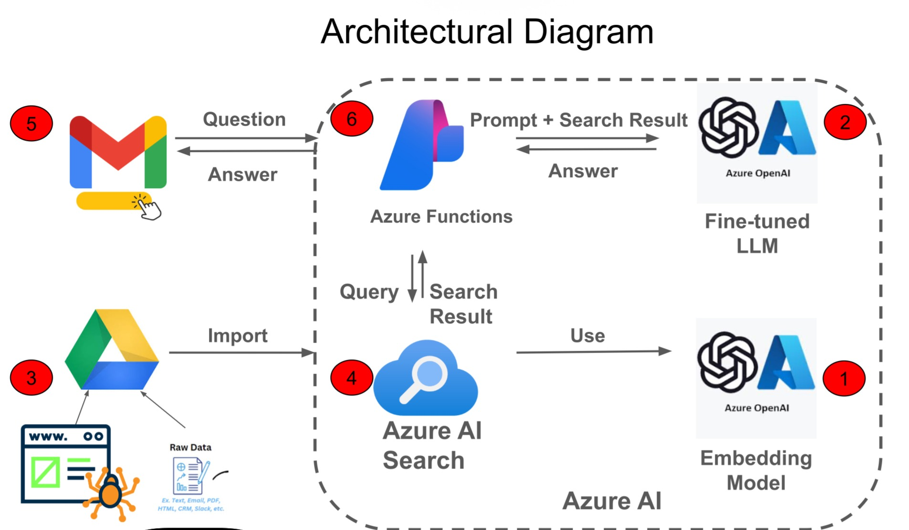

Overview
The Roche cybersecurity team faced a high volume of repetitive user emails. Our team developed an AI-driven solution to autogenerate draft email responses for security analysts, allowing for a "human-in-the-loop" review before sending.
This was a pivotal learning experience where I was first introduced to Retrieval-Augmented Generation (RAG) architecture.
Core Contributions
Direct UI Integration
Focused on the front-end prototype using Tampermonkey, vibe coding a custom script to inject AI functionality directly into the Gmail interface — proving the concept could live within the analysts' existing daily workflow.
Operational Efficiency
Targeted a specific pain point: the time spent drafting manual responses. By providing a "one-click" draft, we demonstrated a significant reduction in manual effort for the security team.
Cross-Functional Learning
Worked to understand how back-end processes — vector searches and prompt engineering — translated into a simple, usable tool. Supported the creation of the final presentation and deliverable.
Solution Architecture
The diagram below shows the end-to-end flow — from raw data ingestion through to the AI-generated draft appearing directly in Gmail via our Tampermonkey script.
